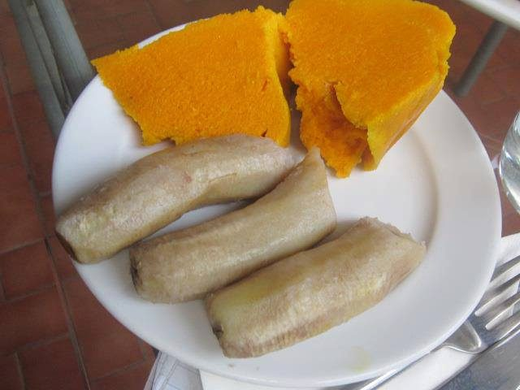

Prep25 min
Cook25 min
Active50 min
Plus15 min resting
Serves4
Difficultyeasy
Contains: milk, gluten
Checked against the ingredient list for ten allergens: milk, egg, fish, crustaceans, tree nuts, peanuts, sesame, mustard, soy and gluten. Brands vary, so read the label on anything new to you.
Ingredients
Quantities for 4.
- 2 cups (280g) Atta
- 1 large, very finely chopped Onion
- 2, finely chopped Green Chilli
- 3 tbsp, chopped Coriander Leaves
- 1 tsp, coarsely crushed Anardanadried pomegranate seed, the sour note koki is known foroptional
- 1/2 tsp, crushed between the palms Ajwain
- 1 tsp Cumin Seeds
- 1/2 tsp Chilli Powderoptional
- 4 tbsp for the dough, plus 4 tbsp for cooking Ghee
- about 1/2 cup Water
- 1 tsp Salt
Cookware
tawa, stovetop
Before you start
- Chop the onion as finely as you can and toss it with the salt 10 minutes ahead, then squeeze out the water. Wet onion tears the dough.
- The dough must be stiffer than roti dough. Closer to shortcrust. Add the water a tablespoon at a time.
- Rest the kneaded dough 15 minutes, covered, before rolling.
Method
- Rub 4 tbsp ghee into the atta with your fingertips until the flour clumps when squeezed. This moyan is what makes koki crumbly rather than chewy.Under-rubbed flour gives a bready koki. You want it to feel like damp sand.
- Mix in the squeezed onion, green chilli, coriander, anardana, ajwain, cumin, chilli powder and salt.
- Add water a spoonful at a time and knead to a stiff, tight dough. Cover and rest 15 minutes.
- Divide into 4 balls. Roll each one about 1cm thick and 12cm across. Much thicker than a roti.
- Cook the first side on a medium-hot tawa, dry, for about 1 minute, until it turns opaque and speckles lightly. Flip and give the other side 1 minute.
- Lift the half-cooked disc off, let it cool a minute, then roll it again to about 7mm thick. Prick all over with a fork.This double-rolling is the whole technique. It breaks the gluten and gives koki its short, crumbly crumb.
- Return it to the tawa on low-medium heat, spoon a tablespoon of ghee around the edge and cook 3-4 minutes a side, pressing with a cloth, until deep gold with brown blisters.Low and slow. A koki browned fast is raw and doughy in the middle.
- Repeat with the remaining dough and serve hot with plain yogurt, mango pickle or sweet tea.
Storage
Koki keeps 2 days at room temperature in a cloth-lined box and travels well. It is the traditional train-journey bread. Refresh on a dry tawa for a minute a side; do not microwave, it goes leathery.
Nutrition Good estimate
Low protein: 8 g a serving, 8% of the calories
| Per serving139 g | Per 100 g | |
|---|---|---|
| Calories | 371 kcal | 268 kcal |
| Protein | 7.8 g | 6 g |
| Carbohydrate | 57.6 g | 42 g |
| of which sugars | 2.8 g | 2 g |
| Fibre | 10.6 g | 8 g |
| Fat | 14.6 g | 10 g |
| of which saturated | 8.3 g | 6 g |
| of which unsaturated | 5.5 g | 4 g |
Estimated from raw ingredients using USDA FoodData Central.
Times, yields, allergens and nutrition are guidance. Use your own judgement on doneness and on storing. More in About.